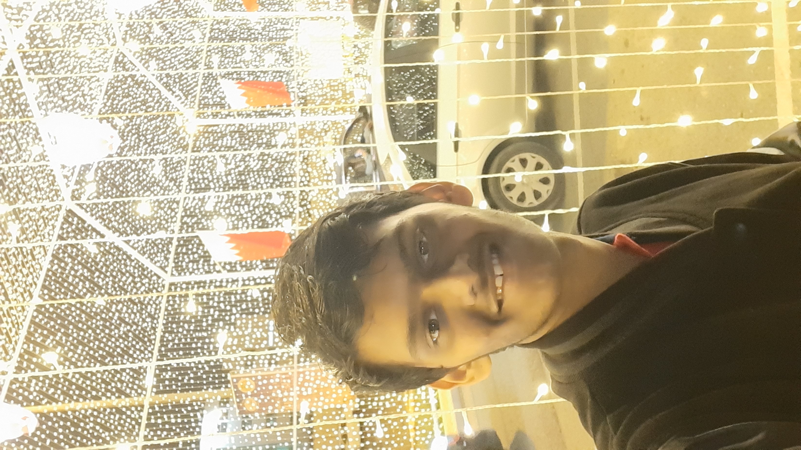

About Me
Born in Mumbai, I moved to a small Island nation of Bahrain in 2004 at a tender age of 2 years old. Since then, I have spent the last 15 years of my life in Bahrain until I moved to Nagpur in 2019 to pursue further education in VNIT, Nagpur.
Born and bought up in a Maharashtrian household, despite living in a foreign land, I am fluent in Marathi along with English and Hindi. I can also some French as it was my 3rd language during secondary school.
An avid football fan, I enjoy playing and watching football. I support Manchester United Football Club in particular. I am also a keen music lover and enjoy listening to various genres of rock music. My favorite band is Bon Jovi.